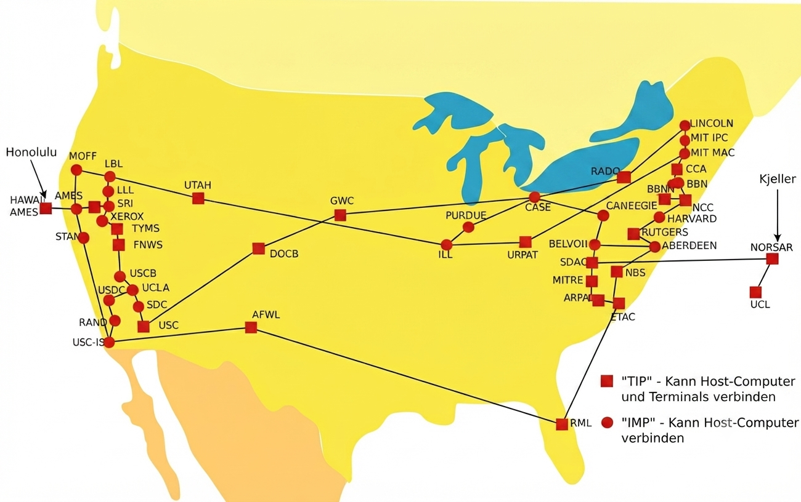

ARPANET 1969: Die Geburtsstunde des globalen Datennetzwerks
Ein junger Programmierer namens Charley Kline sitzt vor einem Terminal in Raum 3420 der Boelter Hall und versucht, das erste Datenpaket zu übertragen. Geplant war das Wort "LOGIN" – doch das System stürzt nach nur zwei Buchstaben ab:
Obwohl es ein technischer Fehler war, ging die Nachricht als perfekte, unbeabsichtigte Metapher für „Lo and behold!“ (Schau und staune!) in die Geschichte ein. Eine Stunde später klappte die Verbindung komplett.

Das ARPANET war ein vom US-Verteidigungsministerium in den späten 1960er Jahren entwickeltes Computernetzwerk und gilt als Vorläufer des heutigen Internets. Es verband Forschungseinrichtungen miteinander, um den Austausch von Informationen zu ermöglichen und die Zuverlässigkeit der Kommunikation zu erhöhen. Das ARPANET legte die technischen Grundlagen für die globale Vernetzung und die Entwicklung des Internets.
Erste praktische Demonstration einer dezentralen, verteilten Datenverarbeitung.
Daten wurden erstmals in Pakete zerlegt und unabhängig verschickt (Packet Switching).
Keine zentrale Schaltstelle. Fällt ein Knoten aus, sucht sich das Paket einen anderen Weg.
Das zugrundeliegende Konzept wuchs von anfangs vier Knoten auf das heutige weltweite Internet.
Bis Ende 1969 wurden die ersten vier Institutionen – oft auch als die Gründerväter des physischen Internets bezeichnet – erfolgreich miteinander zusammengeschaltet:
Charley Kline (geb. 1948)
Der junge Programmierer und Student an der UCLA, der am 29. Oktober 1969 die historische erste Tastatureingabe tippte und damit die allererste Datenübertragung der Internetgeschichte auslöste.
Leonard Kleinrock (geb. 1934)
US-amerikanischer Informatiker und Professor an der UCLA. Er entwickelte bereits in seiner mathematischen Dissertation die theoretischen Grundlagen der Paketvermittlung, auf denen das ARPANET physisch aufbaute.
Robert Taylor (1932 – 2017)
Direktor des Information Processing Techniques Office (IPTO). Genervt davon, drei verschiedene Terminals im Büro zu brauchen, um mit drei Universitäten zu sprechen, stieß er das ARPANET-Projekt an und sicherte die nötigen Gelder.